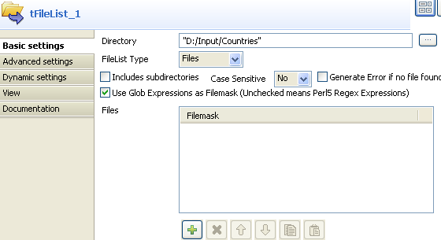

Scenario: Transforming a list of files as data flow
The following scenario describes a job that iterates on a list of files, picks up the filename and current date and transforms this into a flow, that gets displayed on the console.

- Click and drop the following components: tFileList, tIterateToFlow and tLogRow.
- Connect the tFileList to the tIterateToFlow using an iterate link and connect the job to the tLogRow using a Row main connection.
- In the tFileList Properties view, set the directory where the list of files is stored.
- In this example, the files are three simple .txt files held in one directory: Countries.
- No need to care about the case, hence uncheck the Case sensitive checkbox.
- Leave the Include Subdirectories option unchecked.
- Then select the tIterateToFlow component et click Edit Schema to set the new schema
- Add two new columns: Filename of String type and Date of date type. Make sure you define the correct pattern in Java.
- Click OK to validate.
- Notice that the newly created schema shows on the Mapping table.
- In each cell of the Value field, press Ctrl+Space bar to access the list of global and user-specific variables.
- For the Filename column, use the global variable: (
$_globals{tFileList_1}{CURRENT_FILEPATH}. It retrieves the current filepath in order to catch the name of each file, the job iterates on. - For the Date column, use the Talend routine:
Date.GetDate(Perl) orTalendDate.getCurrentDate()(in Java) - Then on the tLogRow component Properties view, check the Print values in cells of a table box.
- Save your job and execute it.



The filepath displays on the Filename column and the current date displays on the Date column.